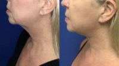

Accents Cosmetic Surgery and Medical Spa in Sterling Heights, Michigan
Name: Accents Cosmetic Surgery and Medical Spa
Display name: Accents Cosmetic Surgery and Medical Spa
Mission: At Accents Cosmetic Surgery, we believe the key to giving you great service is hiring great people. As a proud part of the Detroit cosmetic surgery community, we believe in giving our patients the most comfortable, pleasant experience possible while we help them achieve their cosmetic goals.We make sure our staff is trained in the latest techniques without losing our emphasis on customer service. When you’re with us at Accents, you’re part of our family. Welcome!
Website: https://www.accentscosmeticsurgery.com/
Office hours: Mon: 8:30am – 5:00pm
Tue: 8:30am – 5:00pm
Wed: 8:30am – 5:00pm
Thu: 8:30am – 5:00pm
Fri: 8:00am – 4:30pm
Phone: (586) 496-7816
Twilio phone: (586) 496-7816
Address: 44650 Delco Blvd., Sterling Heights, Michigan, USA, 48313
City: Sterling Heights
State: Michigan
Country code: US
Postal code: 48313
Phone: +15862547692
Country: USA
GPS coordinates on map: 42.6240808,-83.0068036
Treatments:
- Microdermabrasion
- Botox
- ArteFill
- Collagen Injection
- Cheek Lift
- Neck Lift
- Juvederm
- Facelift
- Lower Facelift
- Restylane
- Radiesse
- Cheek Augmentation
- Laser Hair Removal
- Laser Resurfacing
- Fraxel Laser
- Chemical Peel
- Glycolic Peel
- Salicylic Peel
- Photodynamic Therapy
- Liposculpture
- Smart Lipo
- Facial Fat Transfer
- Thermage
- Eyelid Surgery
- Brow Lift
- IPL
- Hair Transplant
- Facial
- Permanent Makeup
- ActiveFX
- Nonsurgical Facelift
- QuickLift
- Dysport
- Nonsurgical Nose Job
- Chin Implant
- DeepFX
- ReFirme
- MiXto Laser
- Retin-A
- Isolaz
- Fraxel Repair
- Hyaluronidase
- ProFractional Laser
- Latisse
- Double Eyelid Surgery
- Lip Fillers
- Chin Liposuction
- Skin Rejuvenation
- Mini Facelift
- Scar Removal
- Lip Lift
- Genioplasty
- Zerona
- Laser Peel
- CO2 Laser
- Skin Lightening
- Facial Reconstructive Surgery
- Belotero
- Xeomin
- CoolSculpting
- Lip Implants
- Exilis
- Cellulaze
- Liquid Facelift
- Vampire Facelift
- Venus Freeze
- Voluma
- NeoGraft
- MACS Facelift
- Restylane Silk
- Bellafill
- Microneedling
- Jaw Reduction
- Kybella
- Venus Legacy
- Venus Viva
- Restylane Lyft
- Orbera Gastric Balloon
- SculpSure
- O-Shot
- Revanesse
- Alastin Skincare
RealSelf Info
Profile created: Oct 25, 2016
Profile modified: Aug 28, 2023
Business type: Practice
Review count: 162
Rating: 4.8
Rating time spent: 5
Rating answered questions: 5
Rating bedside manner: 5
Rating after care: 5
Rating payment process: 5
Rating wait times: 5
Rating courtesy: 5
Rating responsiveness: 5
RealSelf’s PRO: Yes
Realself network status: candidate
Special Offers
Heading
Start Time / End Time
Detail
Treatments
$200.00 off O-Shot or P-Shot Package
Mar 30, 2023 /
May 17, 2033
$150.00 off O-Shot or P-Shot Treatment! Mention RealSelf to redeem!
Any treatment
$50 off Daxxify treatment
Mar 29, 2023 /
May 17, 2033
Receive $50 off a Daxxify treatment. New patients only. Must mention Realself to receive discount
Any treatment
$100 off each syringe of filler
Dec 19, 2022 /
May 17, 2033
Receive $100 off each syringe of filler. Must mention Realself to receive discount
Specific treatments
$1200 off when you book 8+ CoolSculpting Cycles
Mar 8, 2021 /
May 17, 2033
$1200 off when you book 8+ CoolSculpting Cycles, Mention RealSelf to redeem!
Specific treatments
Doctors
Name: Mark Berkowitz, MD
Statement: Board-certified oculoplastic surgeon Dr. Mark Berkowitz has been performing cosmetic and reconstructive plastic surgery procedures on patients in the Detroit, Michigan area for more than 25 years.
At his practice, Accents Cosmetic Surgery, Dr. Berkowitz offers extensive surgical options for both the face and body. His primary expertise lies in oculofacial surgery, focusing on the appearance of the face as it relates to the eyes.
To better serve his patients throughout Detroit, Dr. Berkowitz’s Accent Cosmetic Surgery has two locations, in West Bloomfield and Sterling Heights.
Dr. Berkowitz is passionate about education, which is reflected both in his curriculum vitae and his daily life. He graduated with honors with his bachelor’s degree from CUNY School of Medicine/Sophie Davis Biomedical Education Program and completed his medical degree from Icahn School of Medicine at Mount Sinai in just two years.
He went on to complete an internship and residency at the Interfaith Medical Center in Brooklyn, where he was named Chief Resident his final year. Dr. Berkowitz also completed a fellowship in oculoplastic and reconstructive surgery at the University of Toronto.
He is board certified by the American Board of Ophthalmology and holds three society memberships: the American Society of Ophthalmic Plastic and Reconstructive Surgery, the American Academy of Cosmetic Surgery, and the American Academy of Ophthalmology.
In addition to maintaining his thriving plastic surgery practices in the Detroit metropolitan area, Dr. Berkowitz is active in the community of West Bloomfield, where he lives with his wife and two children. He is an avid fan of the Detroit Lions.
Began aesthetic medicine in: 1995
Rating: 4.8
Name: Faisal Al-Mufarrej, MD
Statement: Dr. Al Mufarrej is a Double Board-Certified Plastic Surgeon and is a member of the American Society of Plastic Surgeons as well as The Aesthetic Society. He has been in practice for over 10 years and specializes in a variety of body contouring including abdominal etching, fat transfers and male body contouring.
Dr. Al Mufarrej graduated
"I am grateful for the ability to help my patients reach their aesthetic goals and be a part of their transformations."
Staff
Name: Maria Orlando
Position: Patient Care Coordinator
Years experience: 17
Biography: Maria has been dedicated in the aesthetic industry for the past 17 years and with Accents Cosmetic Surgery for the past 10 years. Maria brings with her an extensive background of knowledge in medical skin care services and cosmeceutical products. Maria coordinates all patient related functions, business operations, public relations, and sales and marketing efforts. Her passion for the medical / aesthetics industry and patient satisfaction is a perfect match for this professional, innovative, and cutting-edge organization. In addition to her responsibilities as Spa Manager, she is also a Patient Advocate helping clients with coordinating surgeries. She will be there to answer any questions you may have before and after your procedure, ensuring that your experience at Accents is positive and enjoyable!
Maria’s favorite procedure is Hair Restoration. Seeing patients struggle with hair loss is heartbreaking, but knowing the transformation that can happen in just 1 day is overwhelming.
Name: Megan Valente
Position: Patient Care Coordinator
Years experience: 7
Biography: Megan works in our practice to assist the needs of Dr. Berkowitz as a medical assistant in the spa and also worked as a hair care technician performing Neograft for the past 2 years. Her genuine compassion for patient care and sunny disposition provide an atmosphere of comfort that patients desire and deserve! That combined with her dedicated professionalism, adds up to one Medical Assistant that is truly an asset to our company. In her spare time, Megan enjoys being on the boat, cooking and spending time with her son.
Megan’s personal favorite procedure at Accents Medical Spa is the Aqua/SmartLipo! This procedure changed her mind set for healthier living, gave her shape back and lifted her confidence on many levels! She's also in love with the OBAGI skin care line! It’s the perfect product for her skin type and it absolutely changed her life!
Name: Meghan R
Position: Patient Care Coordinator
Years experience: 20
Biography: With over 20 years in the Aesthetic space, Meghan has worked both as a Medical Aesthetician and Medical Aesthetics Trainer. She has presented at various aesthetic seminars for both practical and theory application on a multitude of devices. She is there from the first phone call to your last post-operative visit, and is there to answer all of your questions. She works with Dr. Berkowitz ensuring your experience and aesthetic goals are met, and that your procedures are with the latest and most effective technologies.
Name: Danielle P
Position: Spa Manager
Years experience: 7
Biography: Danielle began her career in the medical field in 2015 at Accents Cosmetic Surgery & Medical Spa. Aside from offering exceptional customer service to every patient, she also possesses strong communication skills, a welcoming demeanor and is very kind & compassionate. She is responsible for the day to day operations in the office, social media and marketing, event coordinating and ensuring all patients and staff are well taken care of.
Danielle highly recommends the Microneedling with PRP, along with chemical peels to ensure a long lasting, youthful appearance. In less than a year, these treatments have made a tremendous transformation on her complexion, resulting in smoother & softer looking skin.
Danielle resides in Macomb Township with her husband, 3 daughters and 2 puppies.
Name: Jessica Kaminski
Position: Medical Assistant
Years experience: 7
Biography: Jessica has been in the Medical field for the past 7 years. She works in our practice as our Medical Assistant. She also works alongside of our P.A. LaTonya Millben and assists her in Dermatology and spa procedures. Jessica has a genuine passion for the patients and Dermatology. At a very young age Jessica suffered from a number of skin conditions. Living with these conditions makes it personable and natural to empathize with patients. Jessica also stresses the importance of compassion and the ability to build and maintain positive relationships.
The VI Peel is one of Jessica’s favorite procedures. The peel is very aggressive and the only peel that is safe for hands, neck, chest and the eye area. Personally using it, Jessica knows first-hand how well the VI Peel stimulates collagen growth for an over-all younger more youthful look with minimal up keep.

Katie R
Name: Katie R
Position: Registered Nurse
Years experience: 5
Biography: Katie received her Bachelor’s of Science in Nursing from Miami University, where she graduated magna cum laude. Katie is currently working toward herMaster’s Degree to become a Family Nurse Practitioner. She started her nursing career caring for eating disorder patients, and shortly thereafter began working in aesthetic nursing. This is when she began to connect the importance of positive self-body image in relation to mental and physical health. As a nurse injector, Katie collaborates with her patients and educates them about their treatment options, while providing a safe, natural outcome. Katie loves helping individuals feel confident, refreshed, and beautiful in their own skin.
Name: Mei L
Position: Registered Nurse
Years experience: 5
Name: Julie K
Position: Receptionist
Years experience: 10
Biography: Julie has spent her entire career in the Medical field with the last 10 years in the Cosmetic/Aesthetic field where she has found her true passion. She understands the importance in giving excellence customer service and strengthens practice relationships through patient communication. As she is the first point of contact, she strives to create a warm and comfortable experience for patients to feel confident and very pleased for choosing Accents Cosmetic Surgery and Medical Spa.
HA Intensifier by SkinCeuticals is her favorite product. It is a corrective serum which multi-functions for firming, elasticity and plumping of skin which she feels is most important as you age. She loves not only the smoothness it creates but the additional hydration is a great benefit.
Julie takes pride in her beautiful family and enjoys spending time with them above all else.
Name: Lana S
Position: Receptionist
Years experience: 6
Biography: Lana worked in the cosmetic beauty industry for 15 years before beginning her career in the medical field in 2016. She takes pride in her daily work by welcoming incoming patients with a warm and friendly smile, answering patient calls and scheduling appointments.
Lana’s favorite treatment is the Hydrafacial. She loves it because it creates an instant gratifying glow.
She currently resides in Rochester Hills with her 9 year old son.
Practice's answers
Question
Answer Header & Date
Answer Snippet
CoolSculpting dent on outer thigh. What can be done to correct this?
Post Coolsculpting Outer Thigh "Dent"
Sep 5, 2021
Midwest Thank you for your question and photograph. An in person consultation is necessary to determine your best course of action. These areas can be improved with fat transfer or fillers to the area. At times more than one procedure is necessary. Good Luck #DRB
Butt implant scar question. Can it be filled with Juvederm?
Scarring
May 8, 2020
Thank you for your question. Please keep in mind that it is best to be seen in person for a consultation with a board certified plastic surgeon to receive the most thorough treatment plan.
A scar that is indented can be filled with filler. Bellafill is nice because it does last longer than a hyaluronic acid filler such as Juvederm and it also helps stimulate collagen production. Incorporating PRP with the treatment will enhance the stimulation of collagen even further.
A surgical...
I have a noticeable lump on my top lip. It has been more than a year, around January 2019. is there an
Lump after lip filler
May 8, 2020
Thank you for your question. To determine the nature of the lump, it is best to be seen by an experienced, medically trained injector to receive the most thorough treatment plan.
A lump after lip filler can persist. Reversing it with a product such as Wydase will possibly resolve the issue, sometimes more than one session is required so that each session is conservative and not cause further issues.
I have indentations underneath my cheekbones. Is there a procedure that could fill those in?
Indentations
May 8, 2020
Thank you for your question. Please keep in mind that it is best to be seen in person for a consultation with an experienced, medically trained injector to receive the most thorough treatment plan.
The indentations you describe sound like it is from volume loss. This sort of concern can be addressed with a variety of fillers such as Voluma, Radiesse or Bellafill. Determination will be made by your provider. PRP is also an option to incorporate into your treatment to stimulate collagen...
Can I donate plasma after getting botox?
Donate plasma after Botox treatment
May 8, 2020
Thank you for your question. You are able to donate plasma after having Botox because the product does not go into the bloodstream. To ensure safety, mention your Botox treatment to the organization you are donating your plasma to.
Latest Before And After Photos
-

-
51 Year Old Spouse Treated With Neck Lift Patient With Doctor Accents Cosmetic Surgery And Medical Spa
-
-
Doctor Accents Cosmetic Surgery And Medical Spa 43 Year Old Lady Treated With Belotero Image
-
-
26 Year Old Female Treated With Thread Lift Picture With Doctor Accents Cosmetic Surgery And Medical Spa
Last updated on 12/06/2023